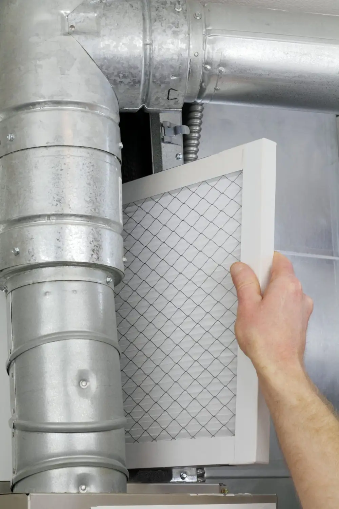

February 3, 2021
HVAC air filters are essential components in your AC as they help trap dust, pollen, pet dander, and other small particles that may be otherwise floating in the air in your home. Filters have different MERV ratings, which determine their effectiveness and the size of particles they can filter out. There are four different types of air filters, including fiberglass, pleated, HEPA, and UV filters. Each of these, though, needs to be changed out frequently throughout the year.
Here’s why:
Types of Air Filters
Fiberglass air filters are disposable and typically have a MERV rating of 4. They are effective in trapping large particles. Pleated air filters are made of polyester fold or cotton and have a MERV rating of between five and eight. They effectively filter dust and smaller air contaminants such as pollen, pet dander, and mold spores.
HEPA or high-efficiency particulate air filters are very effective, especially for people who suffer from allergies and other respiratory problems. They typically have a MERV rating of 11 and screen up to 99% of air contaminants, while UV filters use ultraviolet light to kill viruses, bacteria, and other microorganisms in the air.
Importance of Changing Air Filters
It is crucial to replace your air filters regularly to maintain their effectiveness. Clogged or dirty air filters reduce the quality of your indoor air and reduce the efficiency of your air conditioners, which may lead to respiratory problems, trigger asthma attacks and allergies, and an increased energy bill at the end of the month.
Factors That Determine How Often You Should Change Your Air Filters
The first thing you should consider is the type of air filter your air conditioner requires. There are different air filter types, and typical 1- to 3-inch air filters should be replaced after every two months. The overall air quality of your region also affects the effectiveness of your air filter. If you live in a polluted region or near a construction site, you may need to change your air filter more frequently than in a region with cleaner air.
If you have pets like birds, cats, or dogs, then you may find yourself changing your air filters more frequently throughout the year as the filters trap their pet dander. A home with many occupants will also need to change the air filters more frequently than a home with fewer occupants.
It is important to consult qualified and experienced HVAC technicians, like ours at Goff Heating/Air Conditioning & Plumbing, to replace your air filters and determine the most appropriate air filters for your home.